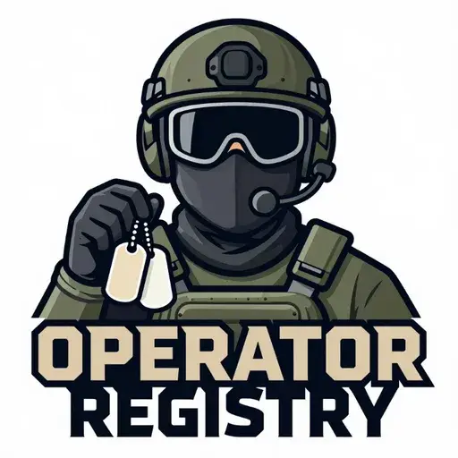

Operator Registry
- Downloads
- 79
- Favourites
- 3
- Mod lists
- 4
Players running this mod anonymously contribute their PMC identity (nickname + level) into a community registry. Other players then see these real community operators used as PMC bot names in their own raids.
This does NOT affect gameplay. Only the bot’s displayed nickname and level are changed. Equipment, inventory, health, AI, difficulty, bot generation settings and progression are never touched, fully compatible with ABPS and other AI mods.
How it works
When you launch the game, the mod anonymously registers your PMC’s nickname and level to a community registry. A central cache server collects all registered operators and serves them back to every player. At raid start, your game downloads the latest operator cache and uses those real community names for PMC bots in your raids.
No network calls happen during raids. The operator list is downloaded once at raid start and used locally for the entire raid. If the download fails, the last good cache is used instead - raids are never blocked by network issues.
What gets collected
Only:
- An anonymous, persistent installation UUID (generated once, never regenerated)
- Your PMC nickname
- Your PMC level
- Timestamps (
firstSeen,lastSeen) - SPT and mod versions
No profile data, no equipment, no inventory, no gameplay stats. See PRIVACY.md for the full disclosure.
Requirements
- SPT 4.0.13
- An internet connection (for registration + cache download on startup only)
Installation
- Download the latest release.
- Extract the
SPTfolder into your SPT install directory (so it lands atSPT/user/mods/SPT-OperatorRegistry/). - Launch the SPT server and start the game.
On first launch the mod generates a persistent installation UUID and registers your PMC to the community registry. On every subsequent launch it updates your nickname/level/ lastSeen (keyed by the same UUID, so it never duplicates).
Configuration
Edit SPT/user/mods/SPT-OperatorRegistry/config/config.json:
{
"enabled": true,
"operatorChance": 1.0,
"cacheUrl": "http://144.21.60.21/operators",
"maxCacheAgeHours": 24
}
| Option | Default | Description |
|---|---|---|
enabled |
true |
Master switch. Disables both registration and bot replacement. |
operatorChance |
1.0 |
Fraction of PMC bots that become community operators. 0.0–1.0. Lower values leave more vanilla names. |
cacheUrl |
http://144.21.60.21/operators |
URL of the community cache endpoint. Set to "" to disable cache downloads (registration still works). |
maxCacheAgeHours |
24 |
Max acceptable local cache age before a background refresh is triggered. |
Bot name replacement
For each PMC bot (USEC/Bear) generated in a raid, the mod rolls operatorChance. On a
hit, it picks a random community operator from the local cache and replaces only the
bot’s displayed nickname and level. Equipment, inventory, AI, difficulty, and everything
else is left completely untouched.
Operator levels are the real community levels - no averaging, no appending numbers, no name modification. Each operator can only appear once per raid. Duplicate names are intentionally allowed (multiple players can have the same nickname).
Scavs, bosses, and other non-PMC bots are never affected.
Troubleshooting
- No community operators appear in raids: Ensure
cacheUrlis set and reachable. Check the server log for[OperatorRegistry] Cache refreshed: N operators. - Bots still show vanilla names:
operatorChancemay be low, or the cache is empty. Operators only replace PMCs (USEC/Bear), not scavs or bosses. - Registration not happening: Check the server log for Firebase auth errors. The mod falls back gracefully - raids still work without registration.
- Cache download fails: The mod keeps using the last good local cache. Raids are never blocked by network issues.
- Want to fully opt out: Set
"enabled": falsein config.json, or remove the mod.
Credits
- Author: ShaneeexD
- License: MIT
READ THE PRIVACY DISCLOSURE
Version
1.0.0
First release.